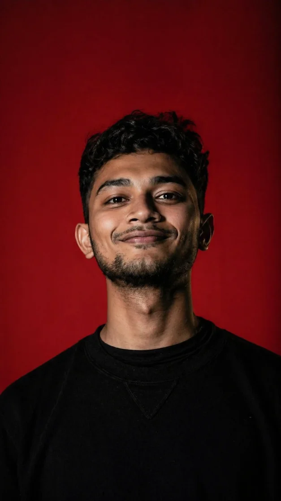

Bergerak,belajar,bertumbuh.
Saya Syaifudin Wahid — guru Pendidikan Jasmani yang percaya setiap anak bisa jatuh cinta pada gerak. Lewat media ajar interaktif dan kolam renang, olahraga jadi pengalaman yang menyenangkan dan terukur.

Pendidikan Jasmani, Olahraga & Kesehatan
web pembelajaran interaktif untuk kelas & PID
Olahraga terbaik adalah yang membuat anak ingin kembali lagi esok hari.
level kurikulum renang Victoria Swimming Club

Mengajar dengan hati, mengukur dengan data.
Di kelas, saya membuat PJOK terasa seperti bermain. Di kolam, saya membimbing setiap perenang dari takut air hingga percaya diri.
Saya membangun media pembelajaran interaktif — animasi gerakan, kuis, permainan, dan papan skor — agar materi PJOK bisa dipakai langsung di Papan Interaktif Digital maupun HP siswa. Di Victoria Swimming Club, setiap siswa punya paspor perkembangan dan laporan latihan setelah setiap sesi.
Dua rumah tempat saya berkarya.
Siap dipakai di kelas — tinggal sentuh.
Pendidikan jasmani yang menggerakkan generasi.
Gunakan media ajar saya di kelas Anda, atau daftarkan putra-putri Anda belajar renang di Victoria Swimming Club.